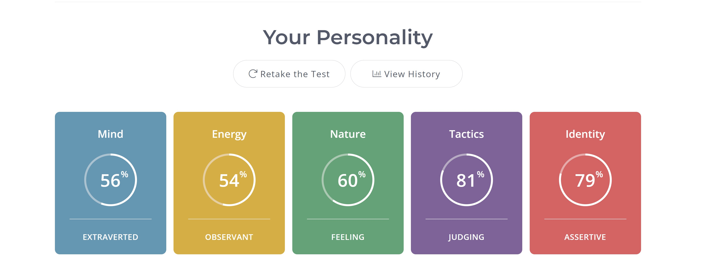
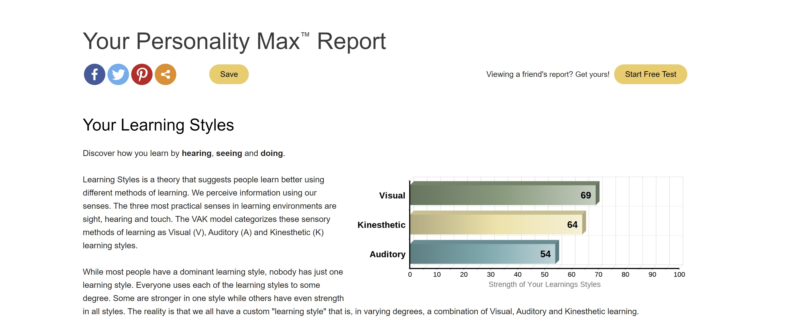
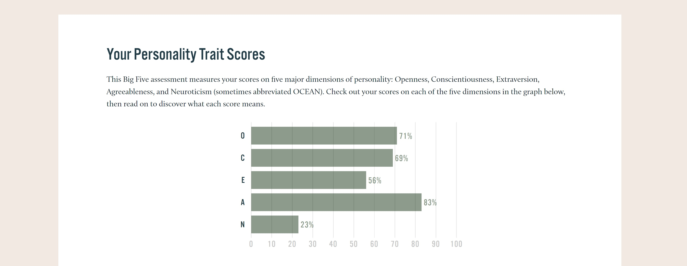

The Myerr-Briggs test means that I have a strong sense of practical skills and are good at connecting with others. This means I am a good fit for the IT field as the results suggest I have a strong sense of duty to meet obligations and are hardworking and efficient. In addition, I will be able to converse with clients and colleges in an IT context without problems. On the other hand, the results suggest that I don’t have as much ability to improvise as I rely on structured tasks which is something I will need to focus on building up. As well as vulnerability to criticism which isn’t a constructive trait and something that would need to be changed in due time. Overall, I would be a team member that is easy to work with.
I will do well in a group setting as I am able organise the environment as well as those working in it. Thus, I can delegate a lead role to myself or someone else if need be. In addition, that I can get along with team members well and are not hard to work with. I would be suitable in a variety of different teams. Due to a sense of duty, I would do all I can to contribute positively to the team and fulfil my assigned role. On the other hand, due to vulnerability to criticism it may be difficult to move past critique of my work and if someone tries to challenge the power structure of the team it may create conflict. Ultimately due to practical and caring nature working in a team should be in most cases, seamless.
When forming a team, it should be taken into account as someone that is more authoritative may want to take the lead role. Yet someone less involved or introverted may need some guidance to help contribute to the team. Thus, due to the skills and communication it may be up to me to delegate roles in a team environment as I am easily able to connect with each person. As the test indicates that I value security and stability a team without conflicting personalities would provide assurance and be a goal to work towards. Conversely, the results indicate that I can be inflexible which can hinder creativity. Thus, must be taken into account and some who has a strong sense of creativity might form a good teammate.

(16Personalities, 2022)
The Learning Style Test means that I am dominant in visual style learning and can greatly benefit from illustrations charts diagrams and videos. Kinaesthetic learning is my secondary learning type meaning that I can also capture new information through the process of physical activity. Lastly, Auditory is my least preferred style meaning that during a lecture or in a classroom or group I will greatly benefit from visual aid.
It will affect me and the team in group settings as being high in multiple learning styles allows me to comprehend information faster and more effectively. Additionally, an awareness of your team's different learning styles allows you to present them with information in a way that is more advantageous to their own learning style. Creating a more efficient team working environment.
A variety of learning styles is best for a team thus each other strengths can complement the others weakness. Too many of the same learning styles would be inefficient as sourcing a variety of information for different places is necessary in a team and interpreting that information quickly works best if there is a variety of learning styles. In my situation someone who is strong in auditory learning would complement my lack thereof and likewise, their potential lack of visual learning.

(PersonalityMax, 2022)
The Big 5 Personality Test resulted in being high in agreeableness meaning that I would tend to work with people, rather than compete against them, which is ideal in a group IT environment. Being high in openness means that I am curious about many things, eager to learn and enjoy new experiences which is an advantage in IT as it is a requirement to stay up to date with the latest tech and coding languages. Moreover, as conscientious is close behind means I can exercise self-discipline to reach long term goals rather than short term enjoyment.
Again, it means that I would work well in teams as I tend to focus on working with other instead of competing against them. Being high in openness is an advantage as it is a principle of team building. An open team communicates their various perspectives in order to obtain consensus. Problems can arise if there is everyone thinks they know what is going on but there is lack of consensus. In which due to agreeableness, I would try to find a solution that everyone agrees on. Lastly, being conscientious means being that I will be orderly and always aim to do the job well, as part of a team I can be relied upon to do the delegated task.
When forming a team this must be considered as someone more extraverted may be needed to lead the team. But it also means I will be able to work with the team well and each designated task well. It means I will be open to different perspectives and try and understand where everyone is coming from. I will work with and not against the team as a team member and not an individual. Furthermore, I would fit into many different teams, well.

(Truity, 2022)
My interpretation of the results is that they are partially accurate as there is a gap between what I believe to be my qualities and the qualities others perceive. I do believe I am easy going and will work well in most teams. I tend to prefer planned out and structured tasks which is why I would be high in conscientiousness. On the other hand, I am not as extraverted as others but still wouldn’t consider myself introverted which was reflected in the results meaning I would communicate well in a team situation. I am a visual learner thus those test results are more valid. And I have a lot of work experience in fields that require me to learn physically. I definitely not vulnerable to criticism as the test suggested nor am I inflexible. But overall, I think some of these results are the more accurate compared to the others.